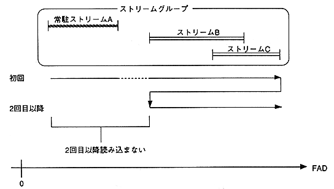

Return to previous page ｜ Return to menu ｜ Go to next page
-
4.5 Resident stream
- When a relatively short stream is repeatedly extracted as necessary, it can be opened as a resident stream (STM_OpenResi). By using a resident stream, the same data can be resident in the CD buffer in advance, rather than being read from the CD many times.
-
(1) Read resident stream
- The file specified for the resident stream is read into the CD buffer only once. It is not read when returning to the loop start stream and repeating access. Therefore, the first time you access the stream, you must start playback before the file range of the resident stream.
When opening a resident stream in the middle of stream access, it is necessary to note that the CD buffer will not be read if the playback position exceeds the resident stream range.

Figure 4.4 Read Resident Stream
-
(2) Transfer start frame address of resident stream
- Once stored in the CD buffer as a resident stream, it can be transferred at any time. This timing is set by setting the transfer start frame address for the resident stream (STM_SetTrFad).
The playback position advances according to the normal stream access, and the resident stream data is transferred when the set transfer start frame address is exceeded. In the case of a resident stream, the stream data is not deleted from the CD buffer even after being transferred to the host area.
-
(3) Use of SIMM file and SCSI file (when debugging)
- SIMM files and SCSI files can only be used as resident streams.
If the specified file is a SIMM file or a SCSI file, it will not be resident in the CD buffer and will be read every time it is accessed.
Return to previous page ｜ Return to menu ｜ Go to next page